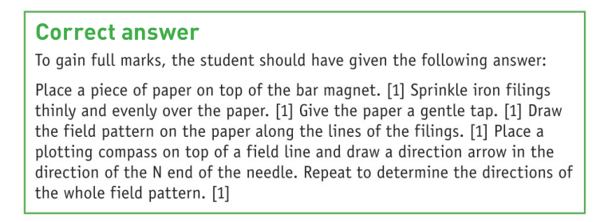

Chapter 9: Magnets and Currents
Physics - Year 11
Naypyitaw International Science Academy
9.1: Magnets

- The Earth has a magnetic field which behaves like a huge magnet
- The magnetic south pole is near the geographic north pole.
- This is why the magnetic north pole of a compass needle always points to Earth's geographic north.
9.1: Magnets
An unmagnetised magnetic material can be magnetised by bringing it close to or by touching a magnet.
This is called induced magnetism
9.1: Magnets
9.1: Magnets

9.1: Magnets

9.1: Magnets
9.1: Magnets

9.2: Magnetic Fields
A magnetic field is a region in space where a magnet experiences a force.

- The magnetic field lines are closer at the poles
- The closer the field lines, the greater the magnetic strength
9.2: Magnetic Fields
9.2: Magnetic Fields

9.2: Magnetic Fields

9.2: Magnetic Fields

9.2: Magnetic Fields
9.2: Magnetic Fields


Question: Why do the iron filings form different patterns in the above two experiments?
9.2: Magnetic Fields

When two like poles are brought together, there is a point where the combined field strength is zero.
This point is called the neutral point